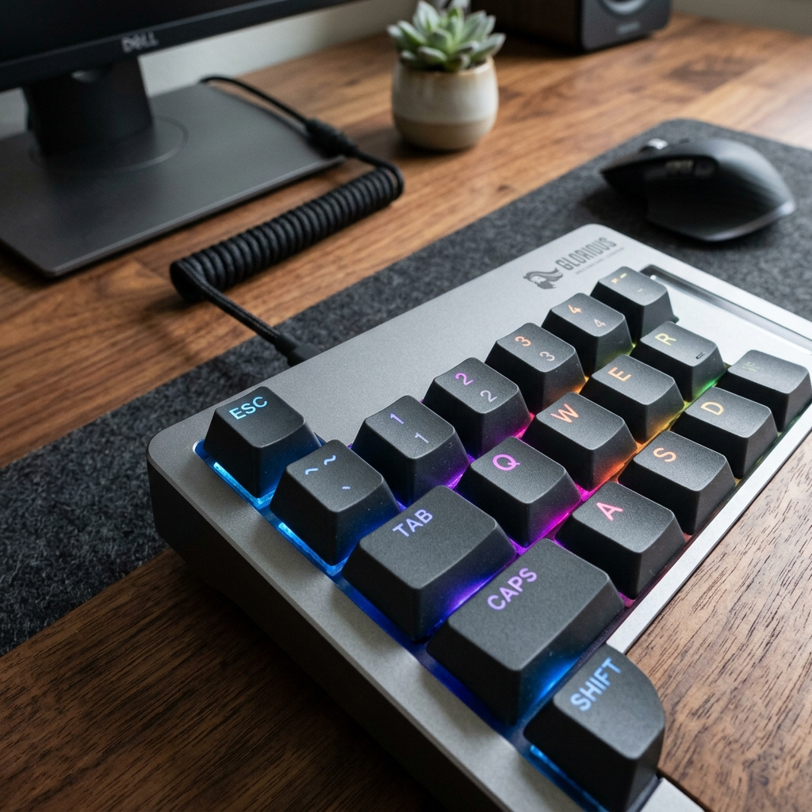

仕事やプライベートで毎日パソコンを長時間使う場合、キーボードはあなたとデジタル世界を繋ぐ最も重要な物理インターフェースです。しかし、多くの人がPC購入時に付属していた安価でキーストロークの重い「メンブレンキーボード」を使い続けています。打鍵感が柔らかすぎたり、反発が弱かったりするキーボードは、長時間の入力で指や手首の疲労を引き起こします。メカニカルキーボードへのアップグレードは、日々の作業効率を劇的に高める最善の選択肢です。
メカニカルキーボードの最大の特徴は、すべてのキーの下に「独立した物理スイッチ」が配置されていることです。これにより、抜群の耐久性（通常数千万回の押下に耐える）が得られるだけでなく、心地よいクリック感、豊かな打鍵音、そして好みの押し心地を選ぶことができます。
代表的な3大スイッチ（軸）の特徴
メカニカルキーボードを選ぶ際、まず直面するのが「色」で表現されるスイッチ（軸）の選択です。これらの色は、内部のスプリングの重さやクリック感の有無を表しています：
1. 青軸 (Blue Switch) — カチカチと小気味よいクリック音と確かな打鍵感
キーを押し下げる途中でハッキリとした引っかかり（段落感）があり、カチッと清脆なクリック音が鳴るのが特徴です。タイピングのテンポが非常に掴みやすく、文章作成やプログラミングに最適で、「これぞメカニカル」という爽快感を味わえます。注意点： 打鍵音がかなり大きいため、オフィスや深夜の自宅、静かな公共スペースでの使用は不向きです。
2. 赤軸 (Red Switch) — 引っかかりのないスムーズさと静音性
押し下げる途中に一切の引っかかりがなく、底まで滑らかに落ちていく「リニア」な手触りです。キーが非常に軽く、長時間タイピングしても指に負担がかかりません。また、メカニカルの中では動作音が最も静かなため、オフィスのデスクワークや素早い連打が必要なPCゲーマーに最適です。
3. 茶軸 (Brown Switch) — 心地よい打鍵感と静音性の両立
メカニカルキーボードの「万能スタンダード」と呼ばれる軸です。キーを押し下げる際にわずかな引っかかりがあり、入力した感触が指に伝わります。しかし、青軸のようなクリック音はしないため、打鍵感を楽しみつつ、周囲への騒音にも配慮したいオフィスユースに最適です。

Keychron K2 ワイヤレスメカニカルキーボード (赤軸/RGB)
MacおよびWindowsユーザーに絶大な人気を誇る84キーのコンパクトなワイヤレスキーボード。Bluetoothで最大3台のデバイスと同時接続でき、赤軸リニアの心地よい打鍵感を提供します。
キーボード配列（サイズ）の選び方
軸の種類に加えて、キーボードの物理的なサイズも使用感に大きく影響します：
- フルサイズ (100%): テンキー（数字パッド）を含む標準的な配列。Excelへの数値入力が多い人向け。
- テンキーレス (80% / TKL): テンキーを排除。マウスを動かすスペースが広がり、肩甲骨が自然な姿勢に保たれます。
- 75% コンパクト (Keychron K2など): キーを隙間なく配置し、矢印キーやファンクションキーを残した人気の配置。デスクがすっきりします。
- 60% ミニマル: 矢印キーやファンクションキーを排除した極小キーボード。机上を極限までシンプルにしたいプロ向け。
まとめ：心地よいタイピングを始めよう
キーボードを新調することは、毎日の作業環境への最高の投資です。指先に素晴らしい感触をプレゼントしましょう。ぜひAmazonであなたに合った軸とサイズのキーボードを見つけ、快適なタイピングライフを満喫してください！